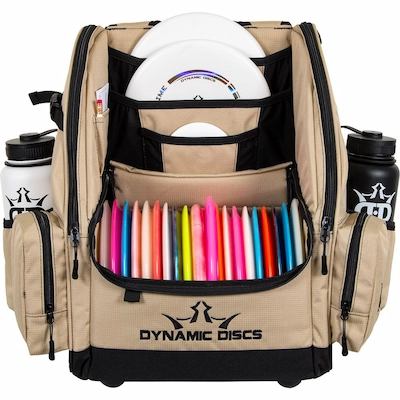
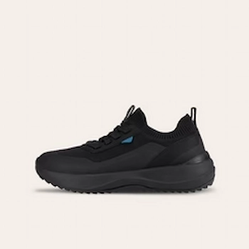
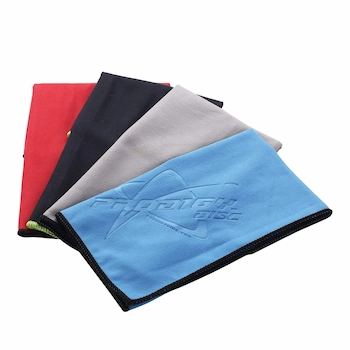
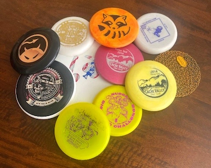
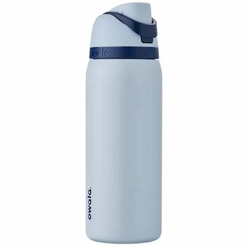
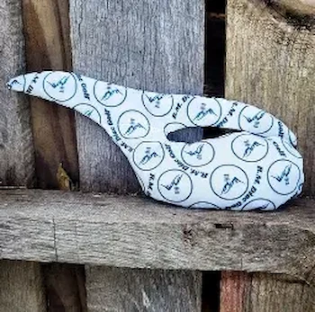

Beginner Disc Golf Gear Guide
Start strong with the essential gear every new disc golfer should have. These items help you stay
organized, comfortable, and ready for every throw.
Disc Golf Bags

A good starter bag doesn't need to be expensive. Look for a light weight shoulder bag or small
backpack that holds 6-12 discs with room for a water bottle. Brands like Dynamic Discs, Innova, and
MVP offer reliable beginner bags. Click the link to see some great bag options for Dynamic Discs.
View Bags
Footwear

Disc golf courses often have dirt, grass, and uneven terrain. Trail shoes with good grip are perfect
for stability and traction. Waterproof shoes are a bonus for wet or muddy days. Brands such as Vessi
and Vivobarefoot are the top brands that most disc golfers wear.
View Shoes
Towels

A microfiber towel helps keep discs clean and dry for better grip. Most players carry 1-2 towels
clipped to their bag. Any microfiber towel works, but disc golf brands offer clip-ready versions.
View Towels
Mini Marker

A mini marker disc marks your lie when playing by official rules. While small, it's a fun way to show
personal style and follow PDGA guidelines during rounds.
View Mini Markers
Water Bottle

Hydration is key on the course. Choose a durable, insulated bottle that can handle drops and keep
drinks cold-especially in warmer months. Owala water bottles are perfect for insulation.
View Water
Bottles
Grip Bag/Chalk Bag

For hot or humid days, a chalk bag or grip bag helps keep your hands dry and improves disc control.
Many players consider this a must-have accessory. Whale Sacs is one of the top chalk bag companies
that pros love using.
View Chalk Bags